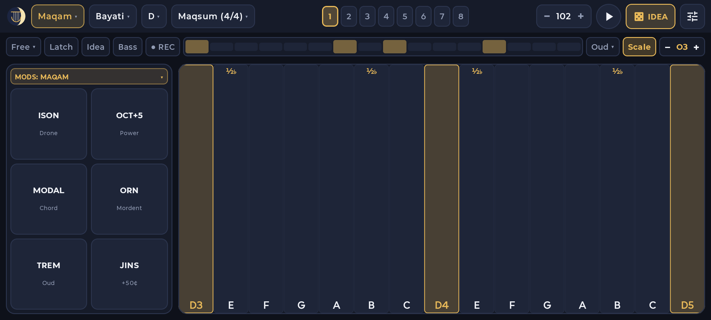
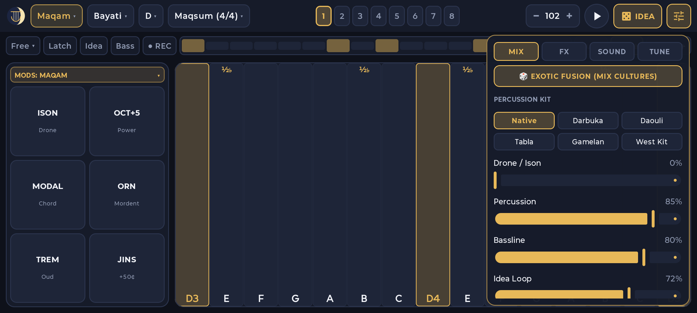

8 Traditions & Exotic Scales
Arabic/Levantine Maqams, Greek Dromoi, Indian Ragas, Gamelan Sléndro & Pélog, Persian Shur, Turkish Hüseyni, Japanese & Ethiopian modes, 17-TET, plus Western, Techno, Metal & Pop.
Open-source Android instrument
Euterpe pairs a tactile 2-octave microtonal keyboard and tradition-aware left-hand modifiers with synthesized world percussion, six YAWN DSP engines, an embedded Lua 5.4 generator, and an 8-layer phrase looper.

Freely cross-mixable
Combine Western chords with a 9/8 Greek Zeibekiko, Maqam Bayati with an Acid TB-303 and Techno 4×4, or Gamelan Sléndro over a 7-beat Indian Rupak—every layer is independent.
Arabic/Levantine Maqams, Greek Dromoi, Indian Ragas, Gamelan Sléndro & Pélog, Persian Shur, Turkish Hüseyni, Japanese & Ethiopian modes, 17-TET, plus Western, Techno, Metal & Pop.
Karplus-Strong (Oud, Bouzouki, Sitar, Kanun, Metal Guitar), FM (Gamelan, FM Bass), Electric Piano, Wavetable, Subtractive (TB-303, Sub Bass, Brass), and Polivoks 1982.
20 pure-C++ modal percussion voices (Darbuka, Bendir, Daouli, Riq, pitch-bending Tabla, Gamelan Gongs, Western Kit) with 6 swappable kits and asymmetric meters (7/8, 9/8, 10/8, 11/8, 13/8, 14-beat Tala).
Pick layers 1–8 right from the top bar—each remembers its own instrument, Tone/Decay/Drive, and Insert FX. Record, mute/unmute individual layers, or stop/start all layers live.
Generate cycle-locked melodic ideas and genre-aware basslines with one tap, or trigger Exotic Fusion to cross-pollinate scales, rhythms, kits, and synths.
Optional Insert Tube Drive, Stereo Chorus, and BPM-synced Ping-Pong Delay, Master Reverb and Glue Compressor, 1-tap sound macros, and a per-degree cents tuner.
Inside Euterpe
Landscape fullscreen surface with zero-clutter access to mix levels, swappable percussion kits, Insert/Master FX, sound macros, and microtonal tuning.

Android release
Download the latest APK or Play Store AAB from GitHub Releases, or build from source with the Android SDK and NDK. Euterpe is free and open source under the GNU GPL-3.0 license.